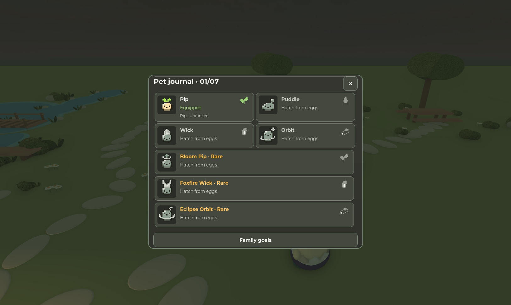
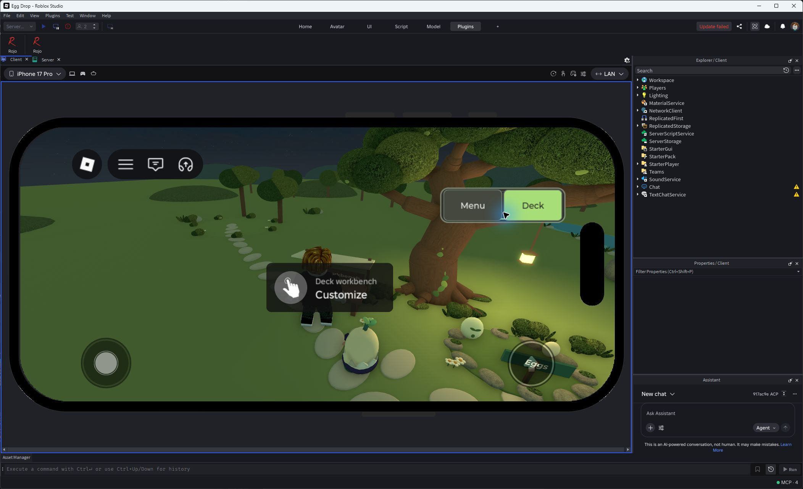
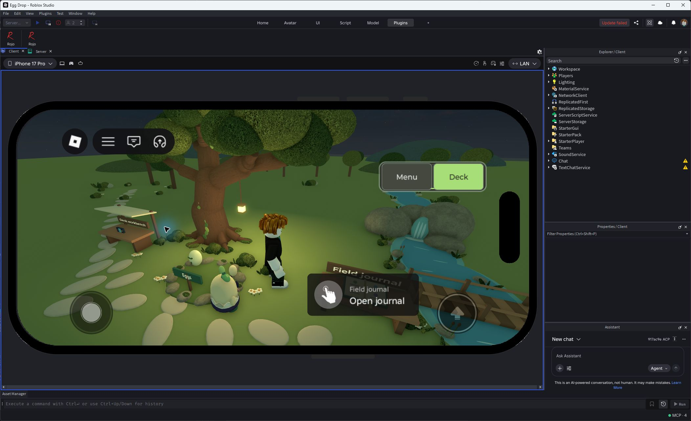
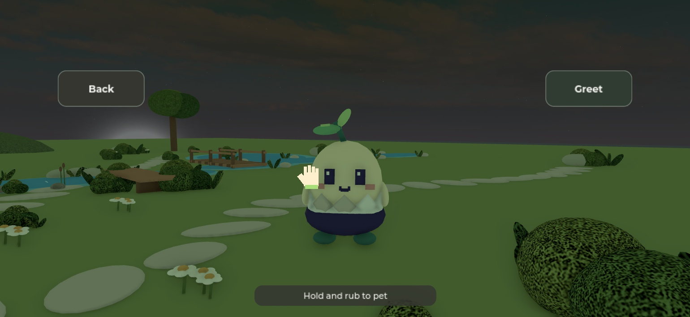
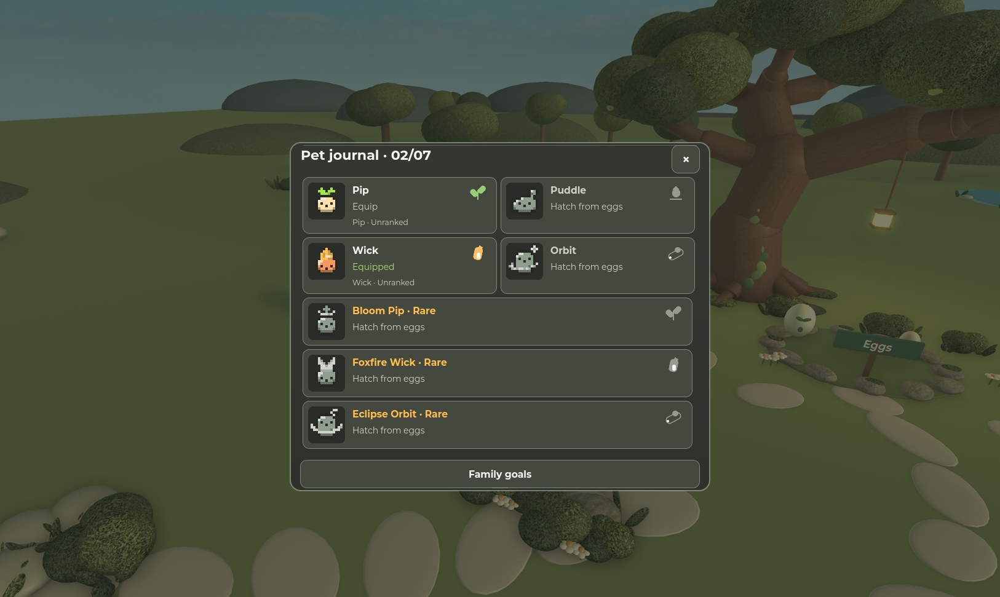
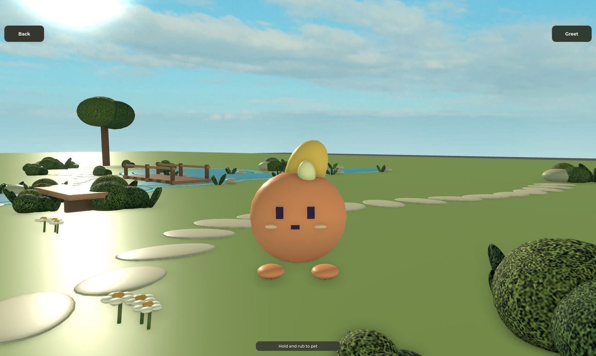

Egg Drop UI review
Before/after desktop captures and actual Studio phone-emulator checks. These are game renders, not concept mockups. Capture versions differ by slice; source and exact test evidence are in UI-OVERNIGHT.md. Physical phone, live multiplayer and real-account rejoin remain untested.
Pocket Deck
Final runtime24751c2 · actual Studio desktop at Medium; game render; native CoreGui may be omitted.
Round recap
Final runtime24751c2 · actual Studio desktop at Medium; 24-drop automated control walkthrough, saved+12 / wallet18.
Pocket menu
Final runtime24751c2 · actual Studio desktop at Medium; game render; native CoreGui may be omitted.
Daily contracts
Final runtime24751c2 · actual Studio desktop at Medium; game render; native CoreGui may be omitted.
Family mastery
Final runtime24751c2 · actual Studio desktop at Medium; game render; native CoreGui may be omitted.
Egg choices
Final runtime24751c2 · actual Studio desktop at Medium; game render; native CoreGui may be omitted.
Hatch reveal
Final runtime24751c2 · actual Studio desktop at Medium; New Wick from an actual18-nectar purchase; exact-ID X/reopen verified.
Deck style
Final runtime24751c2 · actual Studio desktop at Medium; game render; native CoreGui may be omitted.
Sprout Hollow
Final runtime24751c2 · actual Studio desktop at Medium; game render; native CoreGui may be omitted.
Power on
Native Lounge→Deck route at f6d1f4f; clean screen ownership, no direct animation invocation
Actual phone-emulator acceptance
iPhone17 Pro landscape749×381 / safe733×307 and portrait401×777 / safe385×703. Medium and Largest are real Roblox text preferences. Click an image for its full-size original.
Collection and world interaction

Pet journal · native desktop
Reviewed a623636; all seven pets, pinned Family goals.
Workbench · native prompt
Native Studio screenshot includes CoreGui prompt; desktop.
Field journal · native prompt
Native Studio screenshot includes CoreGui prompt; desktop.
Pet focus · held emulated touch
Held Touch input shows the glove; release hides it while focus remains held. Entry was a keyboard E route.Final loop, input and recovery checks

Final pet journal
24751c2 · actual sparse Pip+Wick inventory; other pets remain locked.
Meet Wick
24751c2 · actual exact-ID Meet after purchase; focus held until Back.Largest welcome · controls
Complete Space instruction at179×104; keyboard accepted drop1.Largest welcome · matching
Actual phase2 after drop1; both exact marks retained.Largest welcome · charge
Actual phase3 after pointer A/drop2; charge5.Largest welcome · phone
Studio iPhone17Pro touch emulator; phase3 fits205×30.Controller handoff
Actual Studio Gamepad1 A after real pointer Menu; focus only, sheet stays open. No physical-controller evidence.Save retry on reveal
Client-only retry presentation fixture; original viewport and committed result retained. Native wheel reached end.Save retry in Style
Client-only status fixture at Largest; does not simulate a real network outage.Private publication
Refreshed native Version History: v93 Published, Pocket Deck and Hollow experience -24751c2. This is publication evidence, not a live Roblox Player playtest.Evidence limits
Automated aiming/control walkthroughs prove routes and transaction behavior. They do not establish newcomer understanding, physical thumb comfort, fun, retention or production readiness. Frame-resize fixtures and synthetic failure tests are separately identified in the build notes. Private v93 Published was confirmed in refreshed Studio Version History for runtime24751c2. Physical-device/live-server validation is separate.